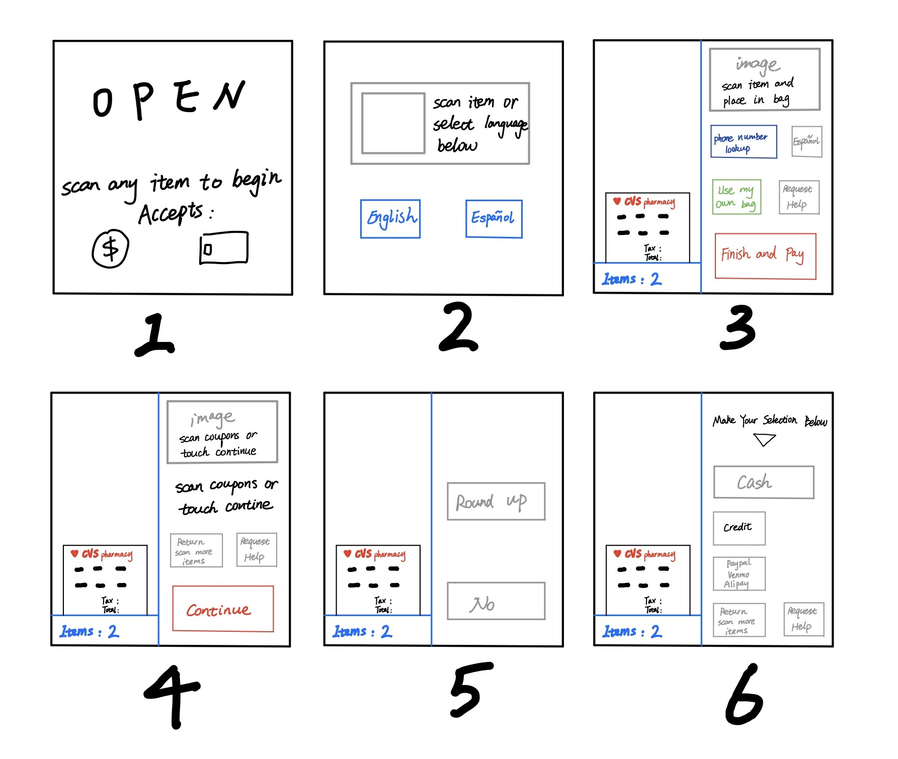

Part 1: Preparation
1) Select an accessible interface.
The selected interface is self-checkout station at CVS.
2) Prepare some questions for users regarding their experiences with the interface.
- What aspect of the interface do you like?
- What aspect of the interface do you dislike?
- What do you think is the most important feature that should be added?
- Which feature is least important to you?
- Is there any feature at the checkout station that confuses you? If yes, which?
- What do you think of the layout of the checkout station?
- Why did you choose self-checkout instead of manual checkout?
- Is there anything surprising or unexpected about the checkout station?
- If you could improve one feature about the checkout station, what would it be?
- What is your favorite payment method?
3) Create a sketch and write a brief description of the interface.
- P1 is the welcome page. Users touch anywhere on the interface to start.
- P2 is the language selection page. Users can choose English or Spanish.
- P3 is the item scanning interface. Each time a user scans an item, its name and price will appear on the virtual receipt on the left. There is an image and 5 buttons on the right. Users can enter their phone number, switch to Spanish (if they've chosen English before), use their own bag to pack items, request help and finish scanning.
- P4 is the coupon scanning interface. If the user doesn't need to scan the coupon, he can just touch the "Continue" button to go to the next page. If the user scans the coupon for the corresponding item, he can either touch “Continue” to pay, or touch “Return Scan More Items” to go back to the previous page to scan other items.
- P5 is the donation page.
- P6 is the payment interface. There are three options: cash, credit card and mobile payment.